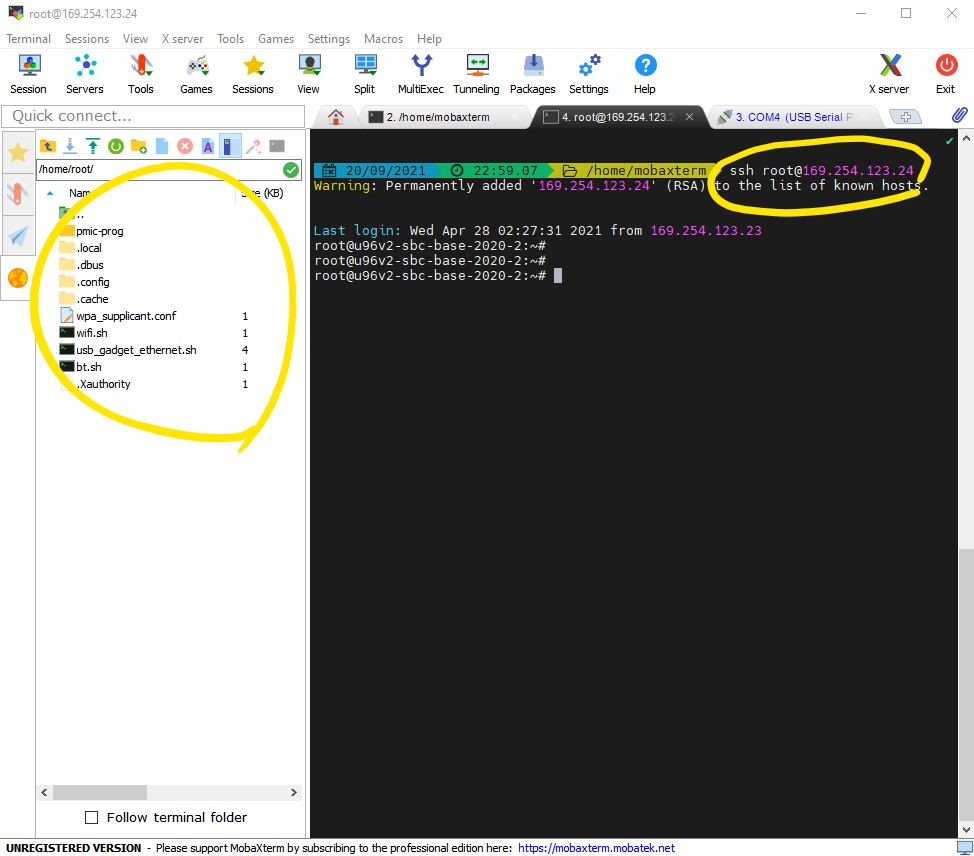

We will divide the computation into vectors that run on
the NEON units in our ARM cores.
Fig. 4.1 shows the high level block diagram of
the ARM core in Ultra96 board.
Fig. 4.1 ARM Cortex A-53 Overview. Source: ANANDTECH#
The Ultra96 boards have ARM Cortex A-53 cores. It’s a
2-way decode, in-order core with one 64-bit NEON SIMD unit,
as shown in Table 4.1.
We will use the NEON Intrinsics API to program the NEON
Units in our cores. An intrinsic behaves syntactically like a function,
but the compiler translates it to a specific instruction that is inlined
in the code. In the following sections, we will guide you through
reading the NEON Programmer’s guide and learning to use these APIs.
In the previous homework, we dealt with a streaming application that
compressed a video stream, and explored how to implement coarse-grain data-level parallelism
and pipeline parallelism using std::threads to speedup the application. For this homework,
we will use the same application and implement fine-grain, data-level
parallelism on a vector architecture; we will explore both auto
vectorization with the compiler and hand-crafted NEON vector intrinsics.
On you local machine, clone the ese532_code
repository using the following command:
gitclonehttps://github.com/icgrp/ese532_code.git
If you already have it cloned, pull in the latest changes
using:
cdese532_code/gitpulloriginmaster
The code you will use for homework submission
is in the hw4 directory. The directory structure looks like this:
Be cautious with ESD protection when using this board with Ultra96. The Ultra96 has exposed pins on the UART and JTAG headers. Be careful not to touch these pins or the circuits on the Pod when plugging the boards together - http://www.zedboard.org/product/ultra96-usb-jtaguart-pod
Make sure you have the board connected as shown in Fig. 4.4.
We will use two terminals on our host computer:
the first terminal will be used to copy binaries into the Ultra96
the second terminal will be used to access the serial console of the Ultra96
We will now open the serial console of the Ultra96. You can use any program like minicom, gtkterm or PuTTY to connect to our serial port. We are using minicom and following is the command we use for connecting to the serial port:
sudominicom-D/dev/ttyUSB1
/dev/ttyUSB1 is the port where the Ultra96 dumps all
the console output. If you are on Windows, this will be
something different, like COM4. When you want to get out
of minicom, use CTRL-AZq
After you have connected to the serial port, boot the board
by pressing the boot switch as shown in Fig. 5.8.
Watch your serial console for boot messages. Following is what ours look like:
�Xilinx Zynq MP First Stage Boot Loader
Release 2020.1 Oct 17 2020 - 06:29:34
NOTICE: ATF running on XCZU3EG/silicon v4/RTL5.1 at 0xfffea000
NOTICE: BL31: v2.2(release):v1.1-5588-g5918e656e
NOTICE: BL31: Built : 20:07:49, Oct 17 2020
U-Boot 2020.01 (Oct 17 2020 - 20:08:47 +0000)
Model: Avnet Ultra96 Rev1
Board: Xilinx ZynqMP
DRAM: 2 GiB
.
.
.
Starting kernel ...
[ 0.000000] Booting Linux on physical CPU 0x0000000000 [0x410fd034]
[ 0.000000] Linux version 5.4.0-xilinx-v2020.1 (oe-user@oe-host) (gcc version 9.2.0 (GCC)) #1 SMP Sat Oct 17 20:08:16 UTC 2020
[ 0.000000] Machine model: Avnet Ultra96 Rev1
[ 0.000000] earlycon: cdns0 at MMIO 0x00000000ff010000 (options '115200n8')
[ 0.000000] printk: bootconsole [cdns0] enabled
[ 0.000000] efi: Getting EFI parameters from FDT:
[ 0.000000] efi: UEFI not found.
[ 0.000000] Reserved memory: created DMA memory pool at 0x000000003ed40000, size 1 MiB
[ 0.000000] OF: reserved mem: initialized node rproc@3ed400000, compatible id shared-dma-pool
[ 0.000000] cma: Reserved 512 MiB at 0x000000005fc00000
.
.
.
.
Starting syslogd/klogd: done
Starting tcf-agent: OK
PetaLinux 2020.1 ultra96v2-2020-1 ttyPS0
root@ultra96v2-2020-1:~# The XKEYBOARD keymap compiler (xkbcomp) reports:
> Warning: Unsupported high keycode 372 for name <I372> ignored
> X11 cannot support keycodes above 255.
> This warning only shows for the first high keycode.
Errors from xkbcomp are not fatal to the X server
D-BUS per-session daemon address is: unix:abstract=/tmp/dbus-2CuBS4BnDn,guid=63270a6bec61460191859caa5f9022fc
matchbox: Cant find a keycode for keysym 269025056
matchbox: ignoring key shortcut XF86Calendar=!$contacts
matchbox: Cant find a keycode for keysym 2809
matchbox: ignoring key shortcut telephone=!$dates
matchbox: Cant find a keycode for keysym 269025050
matchbox: ignoring key shortcut XF86Start=!matchbox-remote -desktop
dbus-daemon[641]: Activating service name='org.a11y.atspi.Registry' requested by ':1.0' (uid=0 pid=636 comm="matchbox-desktop ")
dbus-daemon[641]: Successfully activated service 'org.a11y.atspi.Registry'
SpiRegistry daemon is running with well-known name - org.a11y.atspi.Registry
[settings daemon] Forking. run with -n to prevent fork
Note that near the end some messages spill, so just press Enter couple of times, and you see that you need to login. Login as root with Password: root.
root@u96v2-sbc-base-2020-2:~#
We will now enable ethernet connection between our Ultra96 and
the host computer, such that we can copy files between
the devices. Issue the following command in the serial console:
ifconfigeth010.10.7.1netmask255.0.0.0
Now in your second console in the host computer, first
find out the name that has been assigned to the USB-ethernet
device by issuing ifconfig
We have now assigned IP 10.10.7.1 to our Ultra96 and IP 10.10.7.2 to our USB ethernet device connected to our host computer.
You can test the connection by doing ping10.10.7.2 from the Ultra96 serial console, and doing ping10.10.7.1 from the host
computer.
Let’s copy hw4 directory to Ultra96:
scp-rhw4root@10.10.7.1:/home/root/
4.2.3.2.3. Boot the Ultra96 (Environment - Personal Computer or Detkin Machines with Windows)#
Connect your ultra96 jtag usb to your computer. Also connect the ethernet-usb to ultra96 and the computer. Go to device managers and note down the serial port of the usb. In the example case, it’s COM4.
Start MobaXterm. Click Session in the left top corner and select Serial.
Set the serial port as the one you found in the previous step and bps. In the example case,
it’s COM4 and 115200. Click OK.
Boot the board by pressing the boot switch as shown in Fig. 5.8.
Note that near the end some messages spill, so just press Enter couple of times, and you see that you need to login. Login as root with Password: root.
root@u96v2-sbc-base-2020-2:~#
Click plus sign to open up the local machine’s session(new tab).
Type ifconfig and find out the ip address and netmask assigned to the USB-ethernet device. Following is the example:
Fig. 4.7 ifconfig to find out your local machine’s ip#
Assign your Ultra96 an ip address on the same subnet as the USB-ethernet, e.g. from the
previous step, the ip address of the local machine is 169.254.123.23 and netmask is
255.255.0.0. So, let’s assign the ultra96 to a ip of 169.254.123.24(note that
this is 24!) as follows:
Your devices are now connected. Go to the local machine’s tab and ssh into the Ultra96:

Fig. 4.9 ssh in to the Ultra96 and transfer files#
You can view the files of the Ultra96 on the left hand side.
You can easily drag and drop files from/to the local machine to/from Ultra96.
Drag and drop hw4 folder on the left hand side to start this HW.
There are 3 targets, which we will build in the Ultra96. You can build all of them by executing makeall
in the hw4/assignment directory. You can build separately by:
makebaseline and ./baseline to run the project with no vectorization of
Filter_vertical function.
makeneon_filter and ./neon_filter to run the project with Filter_vertical vectorized
(you will modify the vectorized code later).
makeexample and ./example to run the neon example.
The data folder contains the input data, Input.bin, which has 200 frames of
size \(960\) by \(540\) pixels, where each pixel is a byte. Golden.bin contains the
expected output. Each program uses this file to see if there is a mismatch between
your program’s output and the expected output.
The assignment/common folder has header files and helper functions used by the
four parts.
You will mostly be working with the code in the assignment/src folder.
Read Introducing Neon for Armv8-a and answer the
following questions. We have given you the answers, however make sure you
do the reading! Knowing where to look in a programmer’s
guide is a skill by itself and we want to learn it now rather than later.
1. How many NEON registers are there in ARMv8 and what are they labeled as?
32 128-bit NEON registers, labeled as V0-V31.
2. What is the difference between an operand labeled v0.16b and an operand labeled q0?
v0.16b is a vector register and has 16 lanes with each lane having 1 byte.
q0 is a scalar register of 128-bits.
3. Are registered labeled b0, h0, s0, d0, q0 separate registers?
No, all of them belong to the same register v0. They are qualified names for registers when a NEON instruction operate on scalar data.
Read chapter four from the NEONProgrammer'sGuide and answer the following questions:
1. Where are the NEON Intrinsics declared?
in arm_neon.h header file
2. What NEON data type are you going to use for an unsigned char array of size 16 elements?
uint8x16_t. It will got to Q register.
3. When should you use intrinsics with ‘q’ suffix vs intrinsics without ‘q’ suffix?
When the input and output vectors are 64-bit vectors, don’t use intrinsics with ‘q’ suffix.
When the input and output vectors are 128-bit vectors, do use intrinsics with ‘q’ suffix.
Read chapter four from the NEON Programmer’s Guide and answer the following questions.
Use the Neon Intrinsics Reference website to find and understand any instruction.
Tip
This will help you in coding for your homework.
1. Which intrinsic should you use to duplicate a scalar value to a variable of type uint16x8_t?
vdupq_n_u16
2. Which intrinsic should you use to load 16 bytes from a pointer to a variable of type uint8x16_t?
vld1q_u8
3. Which intrinsic should you use to add two vectors of type uint8x8_t without overflowing?
vaddl_u8
4. Which intrinsic should you use to get the first 8 lanes (low) of a variable of type uint8x16_t?
vget_low_u8
5. Which intrinsic should you use to get the second 8 lanes (high) of a variable of type uint8x16_t?
vget_high_u8
6. Which intrinsic should you use to multiply two vectors of type uint16x8_t?
vmulq_u16
7. Which intrinsic should you use to multiply two vectors of type uint16x8_t and accumlate the result to a variable of type uint16x8_t?
vmlaq_u16
8. Which intrinsic should you use to shift a variable of type uint16x8_t to the right?
vshrq_n_u16
9. Which intrinsic should you use to cast the uint8_t values in a variable of type uint8x8_t to be uint16_t?
vmovl_u8
10. Which intrinsic should you use to cast the uint16_t values in a variable of type uint16x8_t to be uint8_t?
vmovn_u16
11. Which intrinsic should you use to join two uint8x8_t vectors into a uint8x16_t vector?
vcombine_u8
12. Which intrinsic should you use to store data from a uint8x16_t variable to a pointer?


{kind=link}